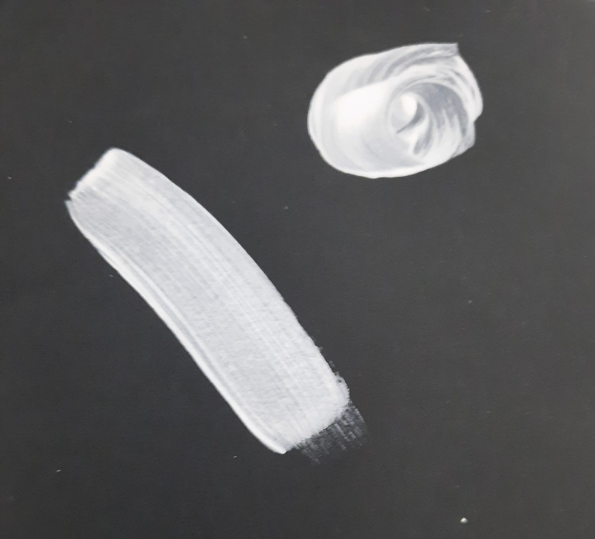
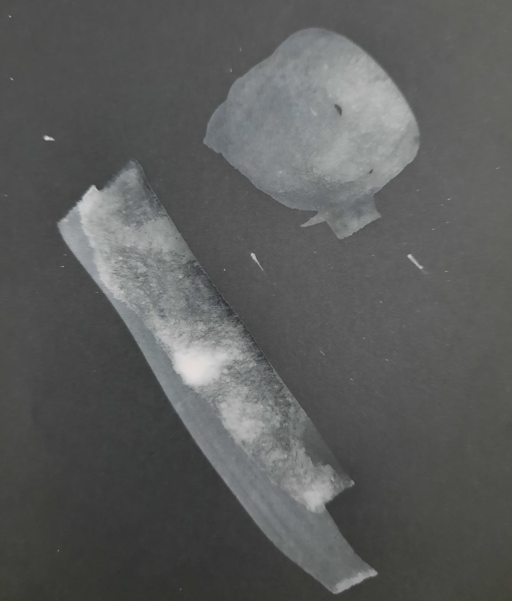
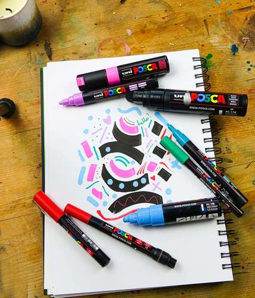
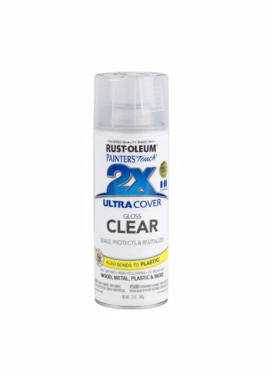

אקריל :
גואש :
צבעי מים :


טכניקת ציור באקריל מורקבת ברובה ממריחה שכבה אחר שכבה של צבע ועליו עוד שכבה ואז עוד שכבה עד שיוצא ציור שאתם מרוצים ממנו . הצבע מתייבש מאוד מהר בהשוואה לסוגי צבעים אחרים ושלא כמו עם גואש או צבעי מים אי אפשר לאחזיר את הצבע לשמוש לאחר שהוא איתיבש אם מים. צבע זה יהיה פחות נוח אם אתם אוהבים לעשות גבנעי מעבר בציור או אוהבים להרבב את צבעי על הציור בקצרה הצבע מתייבש מהר וצריך לקחת את זה בחשבון . אפשר לעריך את זמן היובש בכך שמהרבבים עוד מים לצבע אבל צריח להיזער עם זה כי כמה שיותר מים בצבע כך תצטרחו יותר שכבת בשביל וכסות את השטח בצבע, אשר זהו אחד היתרונו הגדולים שלו הוא מכסה שטח בצורה מהירה ועם פחות שכבות חזרה.אם כול התכונות של אקריל הוא מאפשר לציור על כמאת כול מבלי חשש שהוא ישתף ממנו.
אקריל : |
גואש : |
צבעי מים : |
|  |
|
 |
|  |  |
|
טושים אקריל אלו טושים המלעים בצבע אקריל אשר נותנים את האפשרות לעשות קווים ישרים ודקים יותר |
ספריי שקוף אשר מגן ואוטם את הצבע שלך ובכך שומר שלא יארס ושומר אותו מכול הדברים שלפני זה היו נדבקים עליו |

עד כמה אהבתה את העמוד?